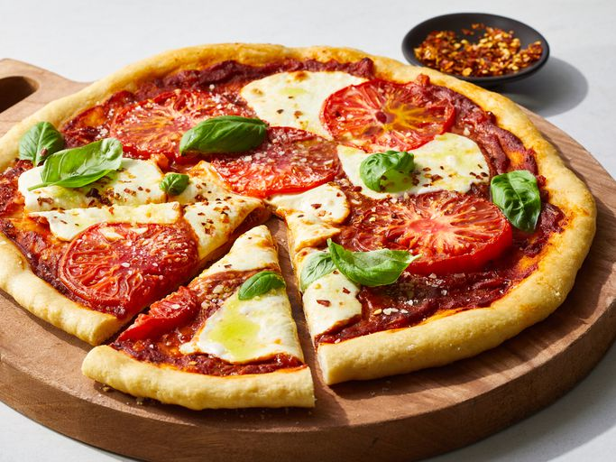

Home
Pizza

Description
Homemade pizza with a crisp crust, flavorful tomato sauce, melty cheese, and your choice of toppings. This easy, classic recipe is great for family meals and can be customized for any taste.
Ingredients
- 2 1/4 teaspoons active dry yeast (1 packet)
- 1 1/2 cups warm water (105–110°F)
- 3 1/2 to 4 cups all-purpose flour
- 2 tablespoons olive oil
- 1 teaspoon sugar
- 2 teaspoons salt
- 1 cup pizza sauce or marinara sauce
- 2 cups shredded mozzarella cheese
- Favorite toppings (pepperoni, mushrooms, bell pepper, onions, olives, basil etc.)
Directions
- In a bowl, combine warm water, yeast, and sugar. Let sit 5-10 minutes until foamy.
- Stir in 2 tablespoons olive oil, salt, and 3 1/2 cups flour gradually until dough forms.
Add more flour if needed until dough is soft and slightly tacky.
- Turn dough onto lightly floured surface and knead 5-7 minutes until smooth and elastic.
- Place dough in oiled bowl, cover, and let rise in warm place 1 hour or until doubled.
- Preheat oven to 475°F (245°C). If using a pizza stone, place it in the oven while preheating.
- Punch down dough and divide into 2 balls (for medium pizzas). Roll out each on floured surface to desired thickness.
- Transfer dough to a sheet pan or pizza peel. Spread sauce, sprinkle cheese, and add toppings.
- Bake 10-14 minutes until crust is golden and cheese is bubbly. Cool 2 minutes, slice, and serve.